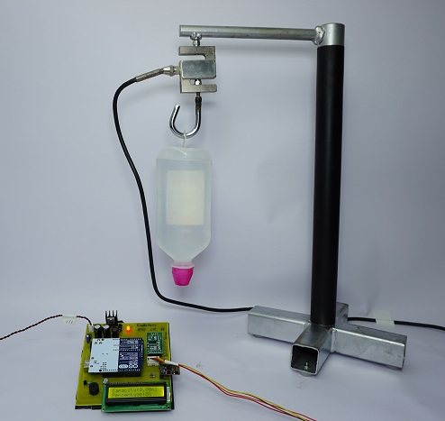
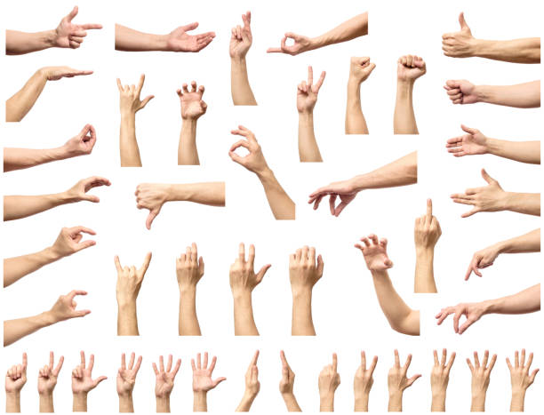

I created a chatbot in Java that assists with basic banking services, like checking balances and making transfers.
It uses natural language processing to provide users with a smooth, interactive banking experience.


I built a machine learning model that can identify plant diseases from leaf images.
It helps farmers or gardeners quickly detect issues and take action, using image processing and AI for smarter farming.
I designed a cool, interactive 3D login screen using HTML, CSS, and JavaScript.
It features smooth animations and a modern look to make the login experience more engaging and fun.

Built a responsive and dynamic frontend using HTML, CSS, and JavaScript with a clean and playful layout.
Used to showcase cat images and animations, engaging users with interactive and fun feline-themed content.

Developed a predictive model using machine learning algorithms to detect the likelihood of heart disease based on patient data.

I built an IoT-based system that tracks saline levels in real-time, ensuring patients receive the right amount of fluid.
The system sends alerts to healthcare providers if levels are too low or too high, improving patient safety and care efficiency.

Hand Gesture Recognition is a real-time system that detects and classifies hand signs using a webcam, enabling touchless interaction. It uses computer vision and machine learning to understand gestures for various applications like sign language or smart controls.